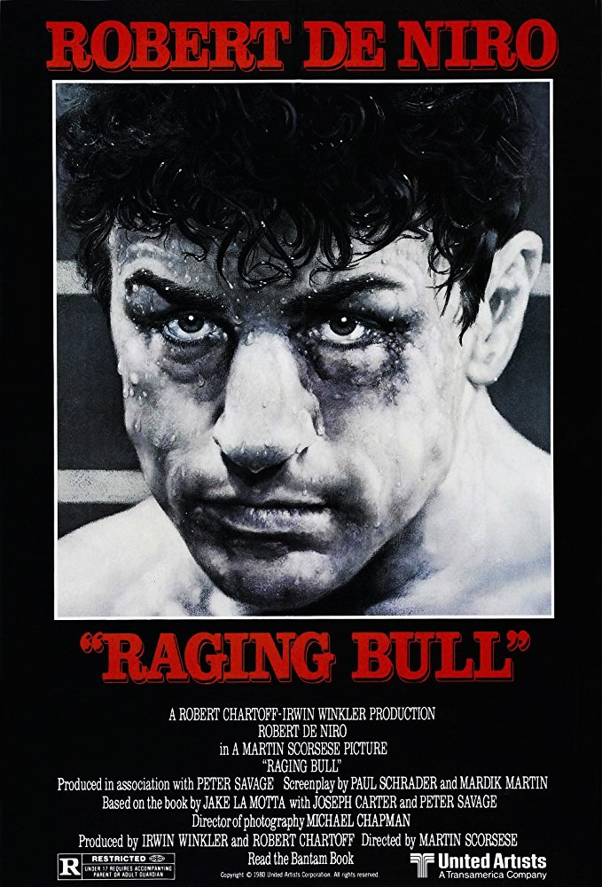

Raging Bull
53rd Academy Awards
(Oscars 1981)
8 Nominations, 2 Awards
| Watched |
| Nominations | ||
|---|---|---|
| Category | Nominees | Result |
| Best Picture | Irwin Winkler and Robert Chartoff | Nominated |
| Actor in a Leading Role | Robert De Niro | Won |
| Actor in a Supporting Role | Joe Pesci | Nominated |
| Actress in a Supporting Role | Cathy Moriarty | Nominated |
| Directing | Martin Scorsese | Nominated |
| Cinematography | Michael Chapman | Nominated |
| Film Editing | Thelma Schoonmaker | Won |
| Sound | Bill Nicholson, David J. Kimball, Donald O. Mitchell, and Les Lazarowitz | Nominated |